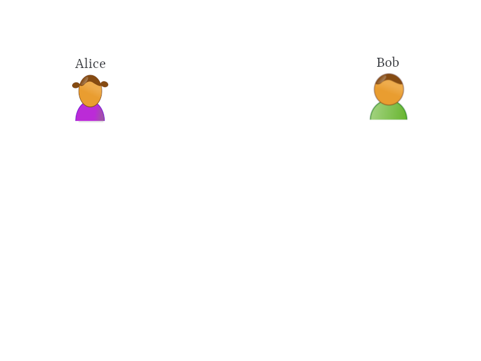
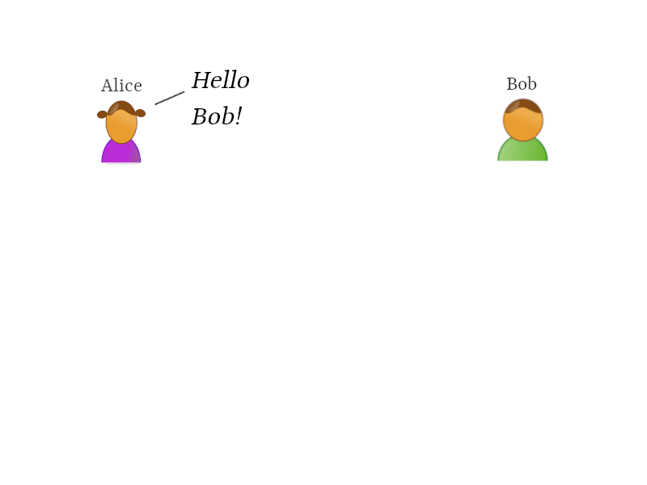
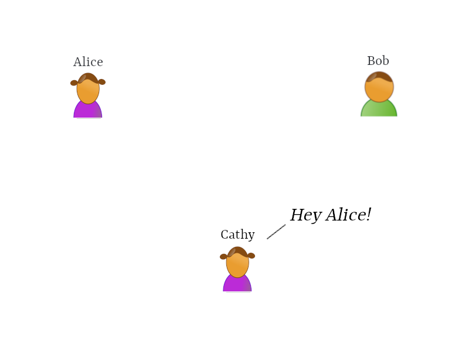
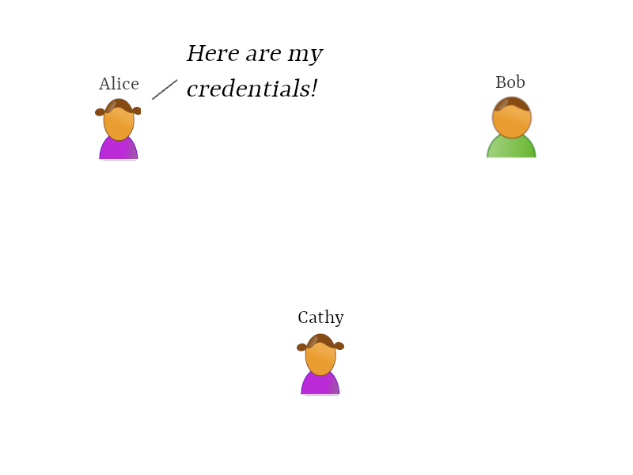
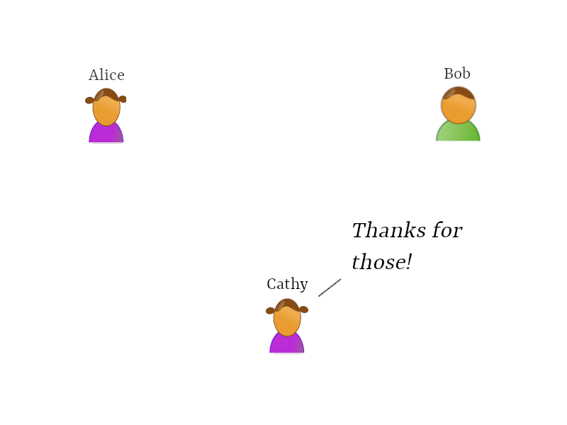
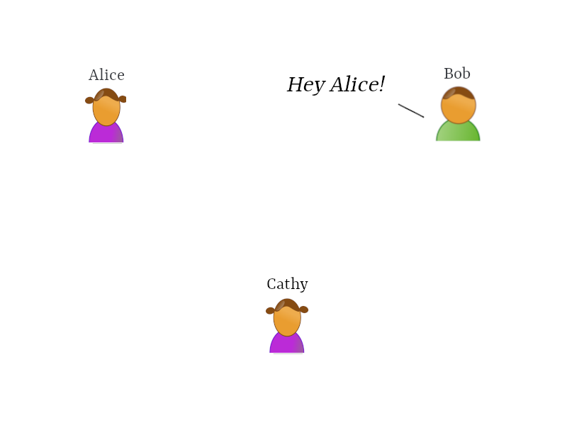
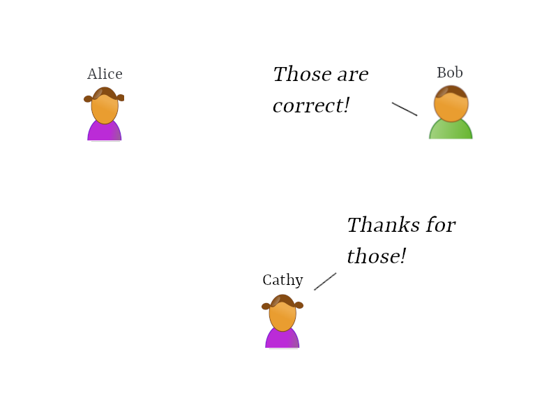

name: inverse layout: true class: center, middle, inverse --- template: inverse # The SSL Handshake [ @tkxs ] --- layout: false ## Overview .left-column[ ### SSL ] .right-column[ Secure Socket Layer * History ] -- .right-column[ * Why Encrypt ] -- .right-column[ * The Handshake ] -- .right-column[ * SSL Records ] -- .right-column[ * Record Transaction ] --- ## Overview .left-column[ ### SSL ### History ] .right-column[ * Released as SSL 2.0 by Netscape in 1995 <img src="assets/images/Netscape_icon.svg" width="80" height="80"> ] -- .right-column[ * SSL 3.0 released in 1996 following public vulnerabilities ] -- .right-column[ * TLS introduced in 1999, based off of SSL 3.0 ] --- ## Overview .left-column[ ### TLS ### History ] .right-column[ ] --- ## Overview .left-column[ ### TLS ### History ] .right-column[ * Both SSL 2.0 and 3.0 were officially deprecated by the IETF in 2011 and 2015 ] -- .right-column[ * Vulnerabilities continue to be found and leveraged in SSL 3.0 [POODLE / DROWN] ] --- ## Overview .left-column[ ### TLS ### History ### Why Encrypt ] .right-column[ * Security ] -- .right-column[ * Privacy ] -- .right-column[ * Identification ] --- ## Overview .left-column[ ### TLS ### History ### Why Encrypt ] .right-column[ ] --- ## Overview .left-column[ ### TLS ### History ### Why Encrypt ] .right-column[  ] --- ## Overview .left-column[ ### TLS ### History ### Why Encrypt ] .right-column[  ] --- ## Overview .left-column[ ### TLS ### History ### Why Encrypt ] .right-column[  ] --- ## Overview .left-column[ ### TLS ### History ### Why Encrypt ] .right-column[  ] --- ## Overview .left-column[ ### TLS ### History ### Why Encrypt ] .right-column[  ] --- ## Overview .left-column[ ### TLS ### History ### Why Encrypt ] .right-column[ ] --- ## Overview .left-column[ ### TLS ### History ### Why Encrypt ] .right-column[  ] --- ## Overview .left-column[ ### TLS ### History ### Why Encrypt ] .right-column[ ] --- ## Overview .left-column[ ### TLS ### History ### Why Encrypt ] .right-column[  ] --- ## The Handshake .left-column[ ### TLS ### History ### Why Encrypt ### The Handshake ] .right-column[ * How can Alice and Bob greet each other to protect their conversation from Cathy? ] -- .right-column[ * The SSL/TLS Handshake, completed in three phases ] --- ## The Handshake .left-column[ ### TLS ### History ### Why Encrypt ### The Handshake ] .right-column[ * The Hello Message Phase ] -- .right-column[ * Alice and Bob exchange Cipher Suites and TLS versions ] -- .right-column[ * Bob gives Alice his Certificate ] --- ## The Handshake .left-column[ ### TLS ### History ### Why Encrypt ### The Handshake ] .right-column[ * The Client Exchange Phase ] -- .right-column[ * Alice gives Bob her Certificate (optional) ] -- .right-column[ * Alice verified Bobs Certificate ] --- ## The Handshake .left-column[ ### TLS ### History ### Why Encrypt ### The Handshake ] .right-column[ * The Cipher Change Phase ] -- .right-column[ * Alice agrees to use a shared Cipher Suite and begins encrypting application layer data ] -- .right-column[ * Bob agrees with Alices selected Ciper Suite, all messages are now symmetrically encrypted and decrypted using the shared key and Cipher Suite ] --- ## SSL Records .left-column[ ### TLS ### History ### Why Encrypt ### The Handshake ### SSL Records ] .right-column[ * The basic unit of data in SSL is a record. Each record consists of a five-byte header followed by data ] -- .right-column[ * There are four record types in SSL ] -- .right-column[ * Handshake * Change Cipher Spec * Alert * Application Data ] --- ## SSL Records .left-column[ ### TLS ### History ### Why Encrypt ### The Handshake ### SSL Records ] .right-column[ * Handshake records contain a set of messages that are used in order to handshake ] -- .right-column[ * Handshake records usually aren't encrypted, unless they occur after a Change Cipher Suite (CCS) record which is typically only the `Finished` message ] -- .right-column[ * Hello Request * Client Hello * Server Hello * Certificate * Server Key Exchange * Certificate Request * Server Hello Done * Certificate Verify * Client Key Exchange * Finished ] --- ## SSL Records .left-column[ ### TLS ### History ### Why Encrypt ### The Handshake ### SSL Records ] .right-column[ * Change Cipher Suite (CCS) records are used to indicate a change in the cipher used ] -- .right-column[ * Following a CCS record, all data is encrypted with the new cipher ] -- .right-column[ * CCS records may not be encrypted ] --- ## SSL Records .left-column[ ### TLS ### History ### Why Encrypt ### The Handshake ### SSL Records ] .right-column[ * Alert records indicate to the peer that a condition has occured ] -- .right-column[ * Alerts occur during the handshake or session and may indicate a warning or failure ] -- .right-column[ * Depending on when they occur, alerts may or may not be encrypted ] -- .right-column[ * `Closure Alerts` indicate the connection between the client and server must be safely closed ] -- .right-column[ * `Error Alerts` indicate a fatal error has occurred and the connection must be immediately closed ] --- ## SSL Records .left-column[ ### TLS ### History ### Why Encrypt ### The Handshake ### SSL Records ] .right-column[ * Application Data Records contain the actual encrypted application data ] -- .right-column[ * This data is fragmented, compressed, and encrypted based on the connection state ] --- ## Record Transaction .left-column[ ### TLS ### History ### Why Encrypt ### The Handshake ### SSL Records ### Record Transaction ] .right-column[ * How can Alice and Bob greet each other to protect their conversation from Cathy _using SSL Records_? ] --- ## Record Transaction .left-column[ ### TLS ### History ### Why Encrypt ### The Handshake ### SSL Records ### Record Transaction ] .right-column[ `Alice` Hey Bob! I'd like to set up an encrypted session, please. Here is a list of cipher suites and the SSL/TLS versions I am able to use ] -- .right-column[ * `Protocol Version` The version of the SSL protocol by which the client wishes to communicate during this session * `Session ID` The ID of a session the client wishes to use for this connection. In the first Client Hello of the exchange, the session ID is empty * `Cipher Suite` It contains the combinations of cryptographic algorithms supported by the client in order of the client's preference * `Compression Method` Includes a list of compression algorithms supported by the client ] --- ## Record Transaction .left-column[ ### TLS ### History ### Why Encrypt ### The Handshake ### SSL Records ### Record Transaction ] .right-column[ `Bob` Hey Alice! Let's use this cipher suite from your list. I can support the TLS version you suggested. Here, take my certificate and public key so you know I'm actually Bob ] -- .right-column[ * `Protocol Version` The chosen version of the SSL protocol that the client supports * `Session ID` This is the identity of the session that corresponds to this connection. If the session ID sent by the client in the Client Hello is not empty, the server looks in the session cache for a match * `Cipher Suite` As selected by the server from the list that was sent from the client * `Compression Method` As selected by the server from the list that was sent from the client * `Certificate Request` The server sends the client a list of all the certificates that are configured on it ] --- ## Record Transaction .left-column[ ### TLS ### History ### Why Encrypt ### The Handshake ### SSL Records ### Record Transaction ] .right-column[ `Bob` I've finished saying hello, and I don't need a certificate from you ] -- .right-column[ * `Server Certificate` The server sends its certificate immediately after the Server Hello message. The certificate type must be appropriate for the selected cipher suite key exchange algorithm, and is generally an X.509.v3 certificate. * `Server Key Exchange` The Server Key Exchange message is sent by the server if it has no certificate * `Certificate Request` A server can optionally request a certificate from the client ] --- ## Record Transaction .left-column[ ### TLS ### History ### Why Encrypt ### The Handshake ### SSL Records ### Record Transaction ] .right-column[ `Alice` Thanks Bob! Your certificate looks valid. I've extracted the public key and encrypted a new `pre-master` secret for you. If you don't need a certificate from me, I won't send one ] -- .right-column[ * A 48-byte `pre-master secret` is generated by the client, encrypted under the server public key, and sent to the server ] --- ## Record Transaction .left-column[ ### TLS ### History ### Why Encrypt ### The Handshake ### SSL Records ### Record Transaction ] .right-column[ `Bob` Thanks for the `pre-master secret`, I'll use my private key to decrypt it ] -- .right-column[ * Now that Bob and Alice have securely generated or recieved the `pre-master` secret, both generate the the `shared secret` using it * This shared secret and the cipher suite are used to encrypt application layer data ] --- ## Record Transaction .left-column[ ### TLS ### History ### Why Encrypt ### The Handshake ### SSL Records ### Record Transaction ] .right-column[ `Alice` Hope all is going well over there, here is a message encrypted using the cipher suite we agreed on and the shared secret I have. Everything I send you from now on will be encrypted ] -- .right-column[ * This is the first `Change Cipher Spec` record sent by Alice, indicating Alice wants to switch to encrypted communication using the agreed cipher suite and shared secret ] --- ## Record Transaction .left-column[ ### TLS ### History ### Why Encrypt ### The Handshake ### SSL Records ### Record Transaction ] .right-column[ `Bob` Great! I've decrypted your message and everything checks out. I'm now encrypting my messages to you as well, you should also decrypt and verify my messages ] -- .right-column[ `Cathy` Just looks like you all are talking gibberish ] --- template: inverse # Thanks